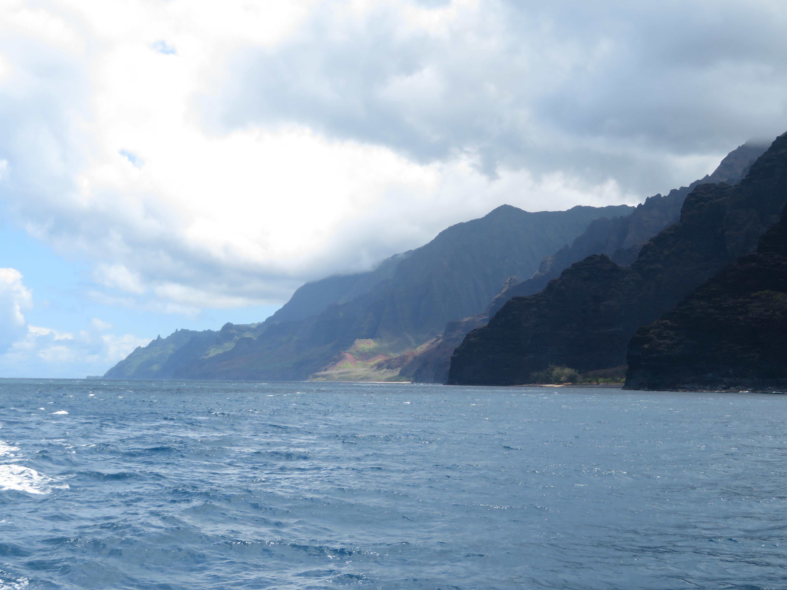
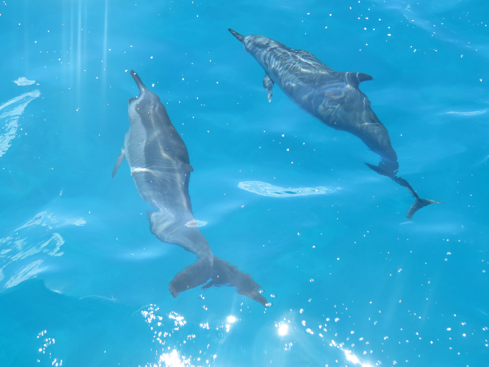
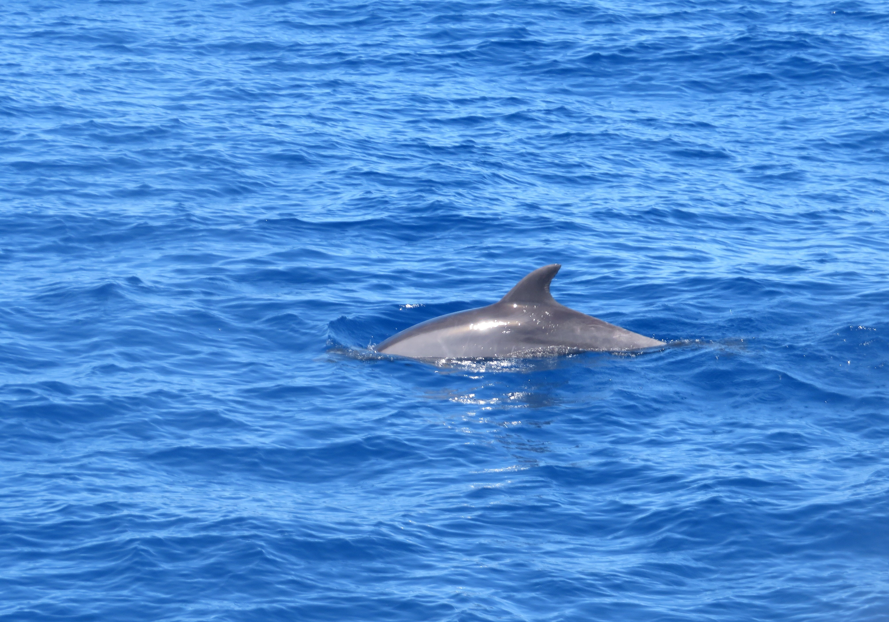
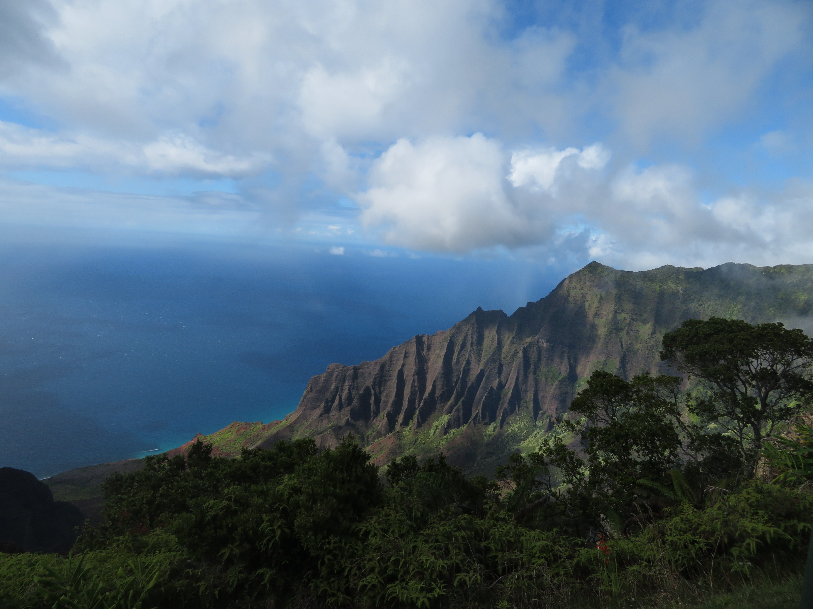
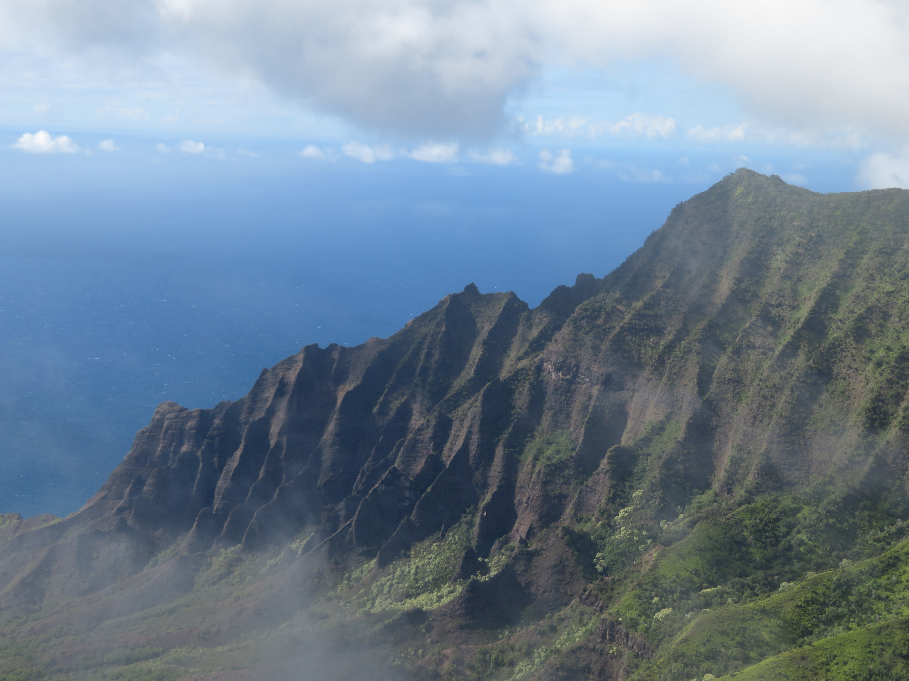

Cruise View

Kalalau Lookout
The Napali Coast on the western side of Kauai is only accessible in two ways: By a boat tour and by hiking from the Koke'e State Park. I got to do both, and it's safe to say that the Napali Coast is one of the coolest places in all of Hawaii.
Cruise View
Kalalau Lookout
The boat tour I took to the Napali Coast started from the town of Ele'Ele on the southern part of the island. From the sea, seeing the colorful cliffs of the Napali Coast towering above was surreal, and I even got to see a whole pod of dolphins on the way.

Napali Coast from the Sea

Napali Coast from the Sea

Napali Coast from the Sea

Pod of Dolphins

Pod of Dolphins

Pod of Dolphins
On land, the Koke'e State Park is located up the road from Waimea Canyon State Park, consisting of tons of trails leading to views of the incredible Napali Coast. I did the 6 mile Awa'Awapuhi Trail, leading to this awesome view of the massive cliff overlooking the sea below. There are also tons of lookouts of the coast, with the Kalalau and Pu'u O Kila Lookouts being some of the most iconic views of the coast.

Awa'awapuhi Trail Final View

Awa'awapuhi Trail Overlook

Awa'awapuhi Trail view of the sea

Kalalau Lookout View

Kalalau Lookout View

Pu'u O Kila Lookout